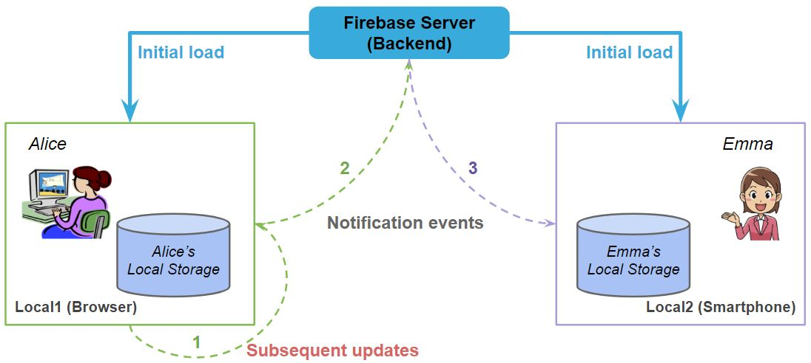
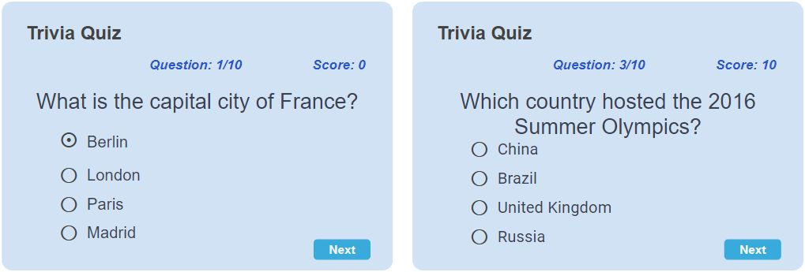

Exam Review Exercises#
You are not require to include any import statements of the libraries used, but you are required to include the type of every variable used in lambda expressions (i.e. “fat arrow functions”).
Question 1#
Alice and Emma are using a movie app connected to Firebase Cloud Firestore.
{kind=link}
(a) Alice has given a thumbs up to a movie, and this action needs to be reflected in the Firestore database. Create the addThumbsUp function in doc-update.ts to increment the thumbsUpCount for a movie identified by its movieId in the movies collection. Each Movie document includes id: string, title: string, synopsis: string, and thumbsUpCount: number fields.
export type Movie = {
id: string;
title: string;
synopsis: string;
thumbsUpCount: number;
};
const app: FirebaseApp = initializeApp(firebaseConfig);
const db: Firestore = getFirestore(app);
function addThumbsUp(movieId: string) {
// Implement the logic to increment the thumbsUpCount
// for a movie with the given id
}
(b) Since Alice has recently made changes to a movie’s information in the movies collection on Firebase Firestore. Emma should see these updates in the app on her smartphone in real-time. Implement the listen_item function in the doc-update.ts file to enable real-time updates on Emma’s smartphone whenever a specific movie’s data is modified in the Firestore database.
function listen_item(movieId: string,
callback: (m: Movie | null) => void
) {
// Implement the logic to listen to changes on a movie with the given id
}
<script lang="ts" setup>
import { ref, Ref, onMounted, onUnmounted } from "vue";
import { Movie } from "../data-types";
import { listen_item } from "../doc-update";
const { movie } = defineProps<{ movie: Movie }>();
const m_movie: Ref<Movie> = ref(movie);
let unsubscribe: () => void;
// Add your code implementation here
Quesion 2#
Assume a hypothetical web service at http://petpics.io provides an endpoint /search that returns image files of particular animal types. This API endpoint accepts a query parameter pet to request specific pet types. The following URL is an example of a request to this web service: http://petpics.io/search?pet=bird,cat to which the service responds with a JSON data in the following format:
[
{
"pet": "bird",
"images": [
{ "url": "http://bit.ly/987123.png", "width": 1078, "height": 876 },
{ "url": "http://bit.ly/411344.jpg", "width": 761, "height": 413 },
{ "url": "http://bit.ly/713287.jpg", "width": 512, "height": 512 }
]
},
{
"pet": "cat",
"images": [
/* more data here */
]
}
]
Demonstrate your knowledge of using the axios library to fetch data from the above web service.
(a) Define the appropriate TypeScript type(s) to model the response data from this API.
// Add your code implementation here
(b) Demonstrate your knowledge of using axios and Promise then() function to fetch dog images and then store the URLs in an array of strings. Be sure all your variables are properly typed. Include error handling for the request.
// Add your code implementation here
(c) Repeat the above task (2), but this time use async-await syntax. Pay attention to proper error handling.
// Add your code implementation here
Question 3#
Consider designing a “Trivia Quiz” game where players answer 10 multiple-choice questions (one question at a time) to earn 10 points for each correct answer. The game will be implemented as a Vue 3.x component using Vuetify.
{kind=link}
The left screenshot displays the question “What is the capital city of France?”, to which the player incorrectly answered “Berlin”.
On the right, the player’s current score is shown as 10, indicating that they have correctly answered one question so far. They are currently attempting to answer the third question: “Which country hosted the 2016 Summer Olympics?”. In each stage of the game, the player selects an option and clicks the “Next” button. The game then checks the answer, adding 10 points to the current score for a correct response, or leaving the score unchanged if the answer is incorrect. Subsequently, the game either presents the next question or, if all questions have been answered, displays the player’s final score.
You are to implement the game as a Vue 3.x component assuming the following are available to use:
An array questions containing objects of trivia questions. Each object includes a question, an array of possible answers, and the index of the correct answer.
const questions = [
{
question: "What is the capital city of France?",
options: ["Berlin", "London", "Paris", "Madrid"],
answer: "Paris",
},
{
question: "Which planet is known as the Red Planet?",
options: ["Mars", "Jupiter", "Saturn", "Venus"],
answer: "Mars",
},
{
question: "Which country hosted the 2016 Summer Olympics?",
options: ["China", "Brazil", "United Kingdom", "Russia"],
answer: "Brazil",
},
/* more questions here */
];
(a) Define all the variables and their initial value needed in the component. Be sure to identify whethter each variable is a ref or an ordinary TypeScript type.
// Add your code implementation here
(b) Show a snippet of code demonstrating how these variables are used in the UI with Vuetify components. You don’t need to design the entire UI, just the relevant Vuetify components where the variables are used.
<template>
// Add your code implementation here
</template>
(c) Complete the implementation of the following functions using Vuetify components:
function goToNextQuestion() {
// Add your code implementation here
}
function checkAnswerAndGoNext() {
// Add your code implementation here
}